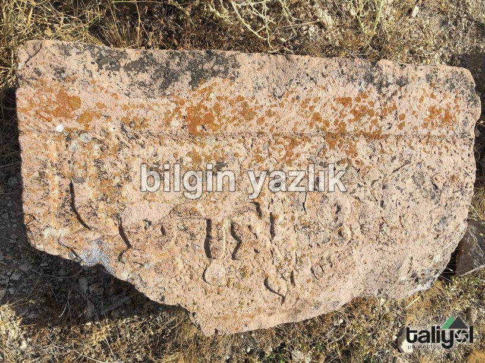
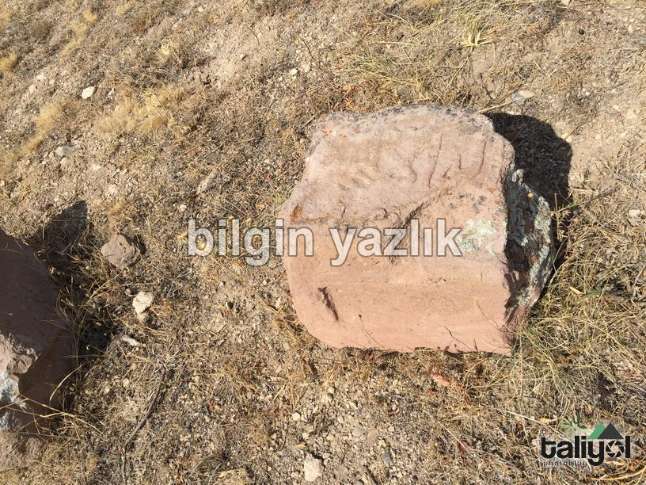
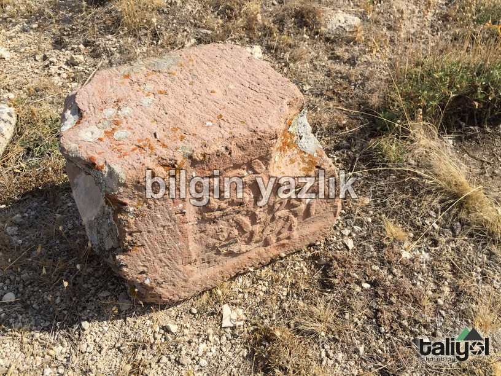
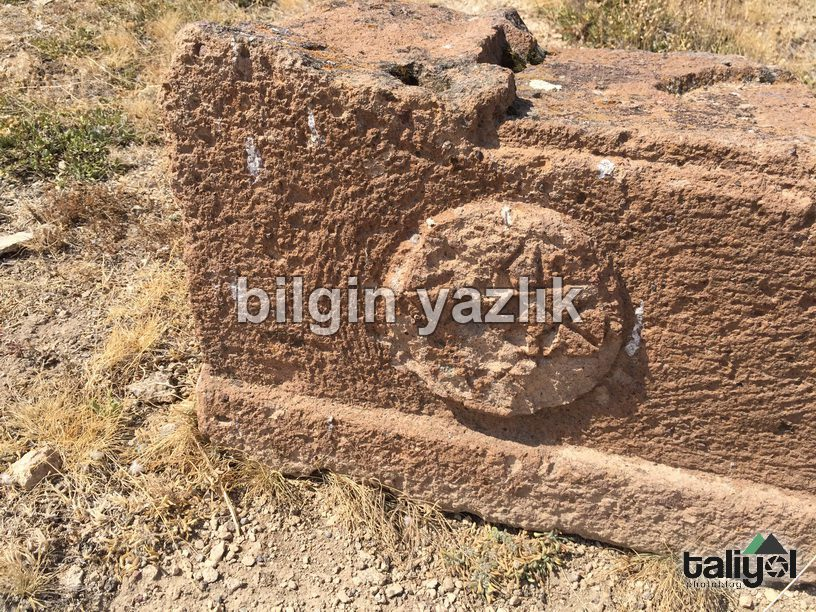
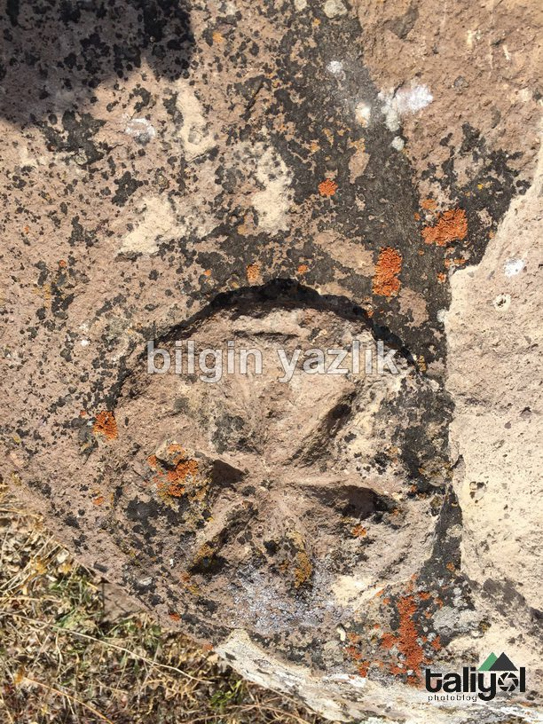
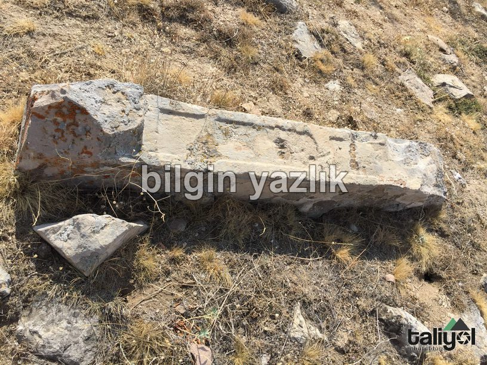

Subaşı Selçuklu Mezarlığı
Kayseri ili Subaşı (Üsgübü, İsgobi) köyünün doğusunda, Koramaz dağının batı eteklerinde yer alan bu mezarlık, şu anda harap durumda, mezar taşlarının sadece birkaç tanesi zamana ve insanlara yenilmeden günümüze kadar ulaşmış. Taşların tamamı kırık ve yere yatık vaziyetteler, taşların renkleri kiremit rengi olup üzerinde çeşitli yazı ve şekiller bulunmaktadır. Bu alanda yapılacak kazı çalışmaları ile daha fazla sayıda mezara ve mezar taşına ulaşılacağına inanıyorum. Şu anda mezar taşları korumasız ve bakımsız öylece duruyorlar. Bölge için önemli bir kültürel ve tarihi miras olduğuna inandığım bu mezarlığın uygun şekilde restore edilmesi ve bakımının yapılması tarihimize olan borcumuzdur diye düşünüyorum.






Bu yazı taliyol arşivinden taşınmıştır. · özgün kayıt